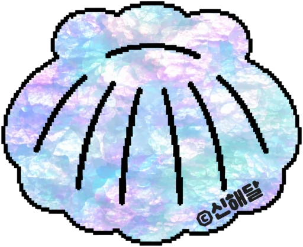

현대사회스포츠센터 회원이 되었어요
다섯 곳을 모두 둘러본 해달에게 드리는 멤버십 카드예요.
처음부터 능숙한 존재는 없습니다.
누구에게나 서툰 시작이 있고, 시작하기에 늦은 때도 없습니다.
누군가의 미숙함을 너그럽게 보길 바라는 마음을 담았습니다.
MEMBER
카드를 길게 누르거나 오른쪽 버튼으로 눌러 저장하세요.

누르면 그 작품 앞으로 가요.
다섯 곳을 모두 둘러본 해달에게 드리는 멤버십 카드예요.
처음부터 능숙한 존재는 없습니다.
누구에게나 서툰 시작이 있고, 시작하기에 늦은 때도 없습니다.
누군가의 미숙함을 너그럽게 보길 바라는 마음을 담았습니다.
카드를 길게 누르거나 오른쪽 버튼으로 눌러 저장하세요.
사진을 길게 누르거나 오른쪽 버튼으로 눌러 저장하세요.
전시실에 걸린 작품을 보고, 얼빵해달을 만나보세요.